summary(nhtemp) Min. 1st Qu. Median Mean 3rd Qu. Max.
47.90 50.58 51.20 51.16 51.90 54.60 Anomalies play a significant role in the field of audit. An anomaly is something that does not fit. It may be a payment far larger than usual, a claim that breaks a pattern, or a month when expenditure suddenly jumps. As auditors examine data, whether financial statements, transactions or other records, such anomalies give valuable leads.
Anomalies often point to problems like these.
Detecting and investigating anomalies is therefore a core skill for an auditor. In this chapter, we will learn several methods to detect them, from simple boxplots to machine learning methods. Table 47.1 gives a road map.
| Method | Works on | Good at finding | Section |
|---|---|---|---|
| Boxplot (IQR rule) | One numeric column | Values far from the middle of the data | Section 47.2 |
| Grubbs’ test | One numeric column, normally distributed | Whether the single most extreme value is an outlier | Section 47.3 |
| Robust z-score, within peer groups | One numeric column, or a ratio | Values extreme for their own peer group, without masking | Section 47.4 |
| Robust Mahalanobis distance | A few related numeric columns | Combinations that break the usual relationship | Section 47.5 |
| Seasonal Hybrid ESD | One time series | Anomalies after allowing for seasonality | Section 47.6 |
| k-Nearest Neighbour distance | Many numeric columns | Records far away from all others (global anomalies) | Section 47.7 |
| Local Outlier Factor (LOF) | Many numeric columns | Records unlike their own neighbours (local anomalies) | Section 47.8 |
| Isolation Forest | Many columns, numeric and categorical | Records which are easy to separate from the rest | Section 47.9 |
| LOF with Gower distance | Many columns, numeric and categorical | Rare combinations of categories and values | Section 47.10 |
STL decomposition (timetk) |
One time series | Odd periods after allowing for trend and season | Section 47.11 |
Change point detection (changepoint) |
One time series | The date of a lasting shift in level | Section 47.13 |
| Combining methods by rank | Scores from several methods | One prioritised list, using the strengths of each | Section 47.14 |
Anomalies are patterns or data points that deviate significantly from the expected or normal behaviour within a dataset. They are also known as outliers, novelties or deviations. There are three types of anomalies.
Many times, anomalies or outliers can be spotted just by looking at the data. The summary() function prints the minimum, maximum, lower and upper quartiles, the mean and the median. It gives a sense of how far an extreme point lies from the rest of the data.
As an example, let us take the mean annual temperatures in degrees Fahrenheit in New Haven, Connecticut, from 1912 to 1971. This data is available in base R as nhtemp.
summary(nhtemp) Min. 1st Qu. Median Mean 3rd Qu. Max.
47.90 50.58 51.20 51.16 51.90 54.60 The easiest way to see how unusual a value is, is a graphical summary like a boxplot. In base R, it is drawn with the boxplot() function. It shows the distribution of values as a box with whiskers, and draws extreme values as separate points. This makes them easy to spot. We can also draw boxplots using ggplot2.
For an audit example, let us take the stationery and printing bills of a district office for one year. Three vendors supply the office. Shree Ram Stationers sends small bills for paper and pens. Kaveri Office Supplies sends somewhat larger bills for toner and files. Modern Printers prints forms and registers, and its bills are the largest. One bill has been planted. It is a bill of Shree Ram Stationers for ₹ 38,000.
set.seed(311)
stationery <- tibble(
vendor = rep(c("Shree Ram Stationers", "Kaveri Office Supplies", "Modern Printers"),
times = c(40, 30, 20)),
amount = round(c(rnorm(40, 4500, 1200), rnorm(30, 9500, 2000), rnorm(20, 34000, 7000)), -1)
)
# Planted. A bill far above what this vendor usually charges
stationery$amount[17] <- 38000glimpse(stationery)Rows: 90
Columns: 2
$ vendor <chr> "Shree Ram Stationers", "Shree Ram Stationers", "Shree Ram Stat…
$ amount <dbl> 5400, 5300, 3860, 2480, 4530, 6410, 4410, 3570, 5990, 6550, 344…Figure 47.1 shows both kinds of boxplot. The left panel is the base R boxplot of the nhtemp data, the mean annual temperatures of New Haven. The right panel draws the stationery bills, one box for each vendor.
boxplot(nhtemp, main = "Box plot of nhtemp data")
ggplot(stationery, aes(vendor, amount, colour = vendor)) +
geom_boxplot(outlier.colour = "red", outlier.size = 2) +
scale_y_continuous(labels = scales::label_comma()) +
guides(colour = "none") +
theme_bw() +
labs(title = "Stationery bills by vendor", x = NULL, y = "Amount (₹)")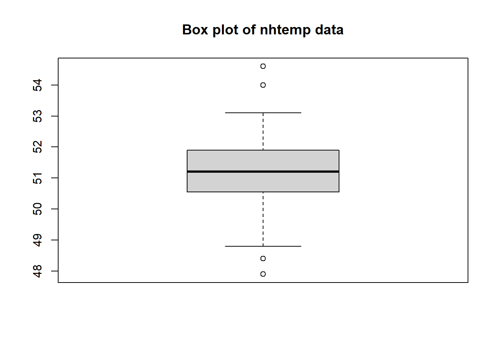
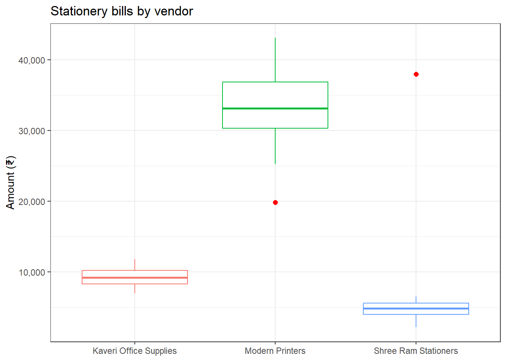
The planted bill of ₹ 38,000 shows as a red point above the box of Shree Ram Stationers. Notice that the same amount would be quite ordinary for Modern Printers. If we had drawn one box for all the bills together, this bill would have hidden among the printing bills.
The separate points in a boxplot are decided by a simple rule, often called the IQR rule. The box covers the middle 50% of the data, from the lower quartile (Q1) to the upper quartile (Q3). The difference Q3 - Q1 is called the inter-quartile range or IQR. Any value more than 1.5 × IQR below Q1, or above Q3, is drawn as a separate point.
We do not have to read these values from the plot. boxplot.stats() returns them in its out element.
boxplot.stats(nhtemp)$out[1] 47.9 48.4 54.0 54.6For the bills, we apply the same rule within each vendor.
stationery |>
filter(amount %in% boxplot.stats(amount)$out, .by = vendor)# A tibble: 2 × 2
vendor amount
<chr> <dbl>
1 Shree Ram Stationers 38000
2 Modern Printers 19870The planted bill is listed. So is one unusually small bill of Modern Printers. A value far below the rest is also an outlier. A small printing bill is less likely to hide a loss, but it may point to an order split into parts, so it is worth a glance too.
The boxplot is the quickest first check on any amount column. Draw it by group rather than for the whole data. For example, draw a boxplot of bill amounts for each vendor or each head of account. A bill which is normal for the whole office may be very unusual for its own vendor. We saw this idea in the RSF test in Chapter 31.
It is important to note that a point anomaly need not always be an extreme value. A point anomaly can also arise as an unusual combination of values across several columns. We will see such an example in Section 47.10.
A collective anomaly, on the other hand, is a group of records which is unusual together. In Figure 47.2, a period of five consecutive days with high temperatures is shown by red points. These daily temperatures are unusual because they occur together, and are likely caused by the same weather event.
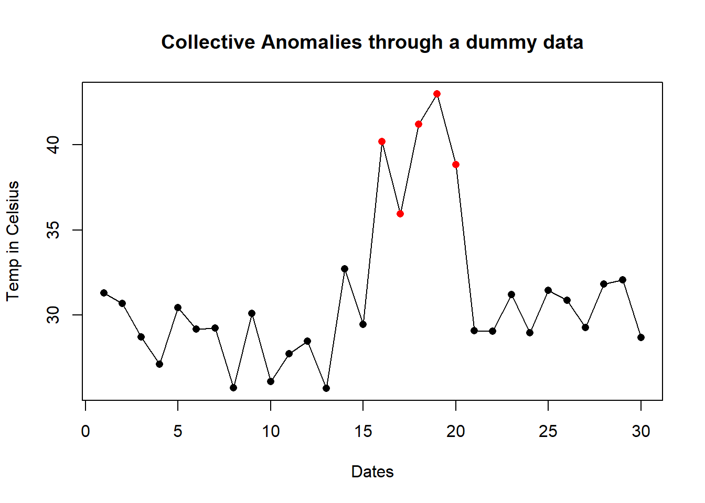
Visual inspection works well when most data points are grouped together and a few lie clearly apart. But it is a matter of judgement. Statistics offers formal tests to decide whether a value is an outlier. Grubbs’ test, named after Frank Grubbs, is one of these.
Grubbs’ test checks whether the single value lying farthest from the mean could be an outlier. This value will be either the largest or the smallest value in the data. The test assumes that the data is normally distributed. So, before using it, we must check that this assumption is reasonable. A histogram is a quick way to check this. (For other ways of checking normality, refer to the chapter on linear regression.)
Let us run the test on the nhtemp data, which we saw in Figure 47.1. First, the histogram.
hist(nhtemp, breaks = 20)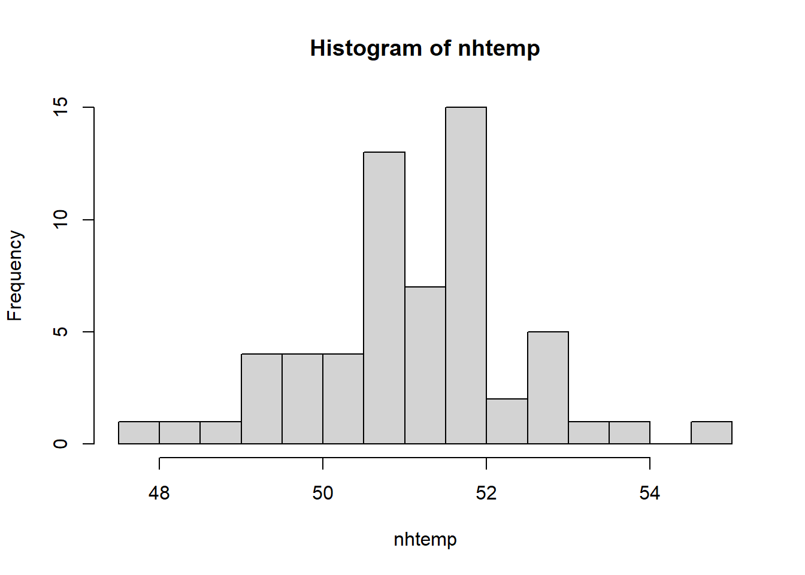
In Figure 47.3 we can see that the data is roughly bell shaped, so the assumption is nearly satisfied. Let us run the test, using grubbs.test() from the outliers package.
library(outliers)
grubbs.test(nhtemp)
Grubbs test for one outlier
data: nhtemp
G = 2.71806, U = 0.87266, p-value = 0.1539
alternative hypothesis: highest value 54.6 is an outlierHow do we read this? The null hypothesis of the test is that there is no outlier. The output shows the alternative hypothesis, that the highest value, 54.6, is an outlier. The p-value is about 0.15, which is more than the usual cut-off of 0.05. So we do not have enough evidence to reject the null hypothesis. In simple words, we cannot conclude that 54.6 is an outlier, though it looked separate in the boxplot.
Grubbs’ test checks only one value at a time, the most extreme one. If there are several outliers, they can hide each other. For testing several suspected outliers together, a related test called Rosner’s test can be used. It is available as rosnerTest() in the EnvStats package. Also remember that most financial data, like bill amounts, is not normally distributed. It usually has a long tail of large values. For such data, Grubbs’ test is not suitable unless the data is first transformed, for example by taking logs.
The best-known way to measure how unusual a value is, is the z-score. It tells how many standard deviations a value lies from the mean. A value with a z-score beyond 3, or below -3, is commonly called an outlier. But the plain z-score has two weaknesses which matter a great deal in audit data.
It is not robust. The mean and the standard deviation are themselves pulled by extreme values. A few large outliers raise the mean and inflate the standard deviation, and so make themselves look less unusual. This is called masking. See this small example.
[1] -0.64 -0.62 -0.60 -0.64 -0.62 -0.60 -0.62 1.39 1.46 1.49The three obviously odd values, 95, 98 and 99, have z-scores below 1.5. They have hidden one another. The remedy is to use measures which outliers cannot pull. These are the median in place of the mean, and the median absolute deviation (MAD) in place of the standard deviation. The MAD is the median of the distances of the values from their median. R’s mad() scales it so that, for normal data, it matches the standard deviation. The result is the robust z-score.
Now the three odd values stand out at once. A common rule, suggested by Iglewicz and Hoaglin, is to flag robust z-scores beyond 3.5. For money amounts, which are skewed, compute the score on the logarithm of the amount, as we did in Section 47.11.
It compares everything with everything. The second weakness matters even more. A district hospital spends far more per patient than a primary health centre. Compared with all facilities together, every district hospital looks “unusual”, and a primary health centre spending three times as much as other PHCs looks normal. The fair comparison is with the peer group. That means PHCs with PHCs, and district hospitals with district hospitals.
Let us see both points on the medicine expenditure of 300 health facilities of a State.
set.seed(2028)
types <- c(PHC = 200, CHC = 70, DH = 30) # primary, community health centres, district hospitals
facilities <- tibble(type = rep(names(types), types)) |>
mutate(facility = paste0(type, "-", sprintf("%03d", row_number())), .by = type) |>
mutate(beds = round(case_when(type == "PHC" ~ runif(n(), 6, 10),
type == "CHC" ~ runif(n(), 30, 50),
TRUE ~ runif(n(), 100, 300))),
patients = round(beds * rlnorm(n(), log(140), 0.25)), # patients per month
cost_per_patient = round(case_when(type == "PHC" ~ 120, type == "CHC" ~ 330,
TRUE ~ 850) * rlnorm(n(), 0, 0.18)),
# Planted. Medicine spending far above the facility's own peers
cost_per_patient = case_when(facility == "PHC-037" ~ 410,
facility == "CHC-012" ~ 1250,
TRUE ~ cost_per_patient),
medicine_lakh = round(patients * cost_per_patient / 1e5, 2))facilities |>
summarise(facilities = n(), median_cost = median(cost_per_patient), .by = type)# A tibble: 3 × 3
type facilities median_cost
<chr> <int> <dbl>
1 PHC 200 118
2 CHC 70 329
3 DH 30 898First, the plain z-score of the cost per patient, over all 300 facilities.
# A tibble: 2 × 2
type n
<chr> <int>
1 CHC 1
2 DH 7Of the 8 facilities flagged, 7 are district hospitals, flagged simply for being district hospitals. Now the robust z-score of the log cost, computed within each type with .by.
# A tibble: 2 × 4
facility type cost_per_patient rz_peer
<chr> <chr> <dbl> <dbl>
1 PHC-037 PHC 410 6.2
2 CHC-012 CHC 1250 7.5Only the two planted facilities are flagged. PHC-037 spends ₹410 per patient, ordinary for a CHC but more than three times what other PHCs spend, which the plain z-score over all facilities could not see. CHC-012 spends far more than other CHCs.
Robust z-scores within peer groups are the simplest anomaly method that an audit team can explain to anyone, and often the most useful. Choose peer groups that should behave alike. Examples are facilities of one type, schools of one level, police stations of one category, DDOs of one department, vendors of one commodity. Use a ratio that removes size, like cost per patient or expenditure per student. And make sure each group has enough members, at least 20 or 30, for the median and MAD to be reliable.
Robust z-scores look at one measure at a time. Some anomalies show only in a combination. When a natural ratio exists, like cost per patient, the ratio captures the combination, and the z-score of the ratio is the best tool. But often the measures are related in a way no single ratio captures.
Take the primary health centres of a district. Larger PHCs see more patients in the outpatient department (OPD) and also conduct more deliveries, so the two numbers rise together. Each delivery in a public facility earns an incentive under the Janani Suraksha Yojana, so inflated delivery figures are a known risk. Now suppose one PHC reports a fairly low OPD but a fairly high number of deliveries. Neither number is unusual by itself. Together, they are.
set.seed(12)
n_phc <- 200
size <- rlnorm(n_phc, 0, 0.35) # some PHCs serve larger populations
phc <- tibble(phc = sprintf("PHC-%03d", 1:n_phc),
opd = round(1100 * size * rlnorm(n_phc, 0, 0.12)), # patients per month
deliveries = round(30 * size * rlnorm(n_phc, 0, 0.15))) # deliveries per month
# Planted. Low OPD (15th percentile) but high deliveries (88th percentile)
phc$opd[77] <- round(quantile(phc$opd, 0.15))
phc$deliveries[77] <- round(quantile(phc$deliveries, 0.88))# A tibble: 1 × 5
phc opd deliveries z_opd z_deliveries
<chr> <dbl> <dbl> <dbl> <dbl>
1 PHC-077 745 46 -1.1 1.15Neither robust z-score of PHC-077 comes anywhere near 3.5. A scatter plot shows the problem at once.
ggplot(phc, aes(opd, deliveries)) +
geom_point(alpha = 0.6) +
geom_point(data = filter(phc, phc == "PHC-077"), colour = "red", size = 3) +
scale_x_log10() + scale_y_log10() +
labs(x = "OPD patients per month (log scale)", y = "Deliveries per month (log scale)") +
theme_minimal()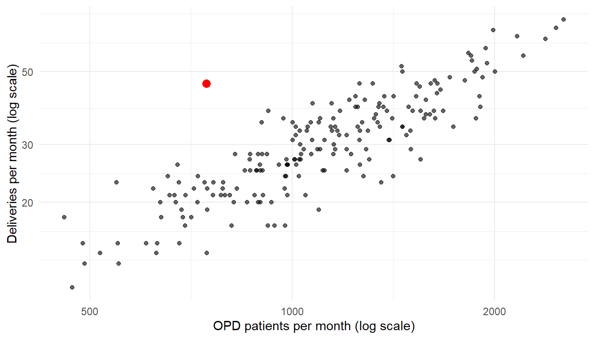
The Mahalanobis distance measures how far a point lies from the centre of the data, taking account of how the measures vary together. A point along the main band of the scatter, even far out, is not unusual. A point across the band, like PHC-077, is. It works for any number of measures, where scatter plots are no longer possible.
Like the z-score, it needs a centre and a measure of spread, and like the z-score, these are pulled by outliers. So we use robust estimates, from cov.rob() in the package MASS, which comes with R. Its “minimum covariance determinant” method finds the centre and spread of the most tightly packed half of the data, ignoring the rest. We work on the logarithms, since the counts are skewed.
# A tibble: 5 × 4
phc opd deliveries mahal
<chr> <dbl> <dbl> <dbl>
1 PHC-077 745 46 27.6
2 PHC-092 548 23 9.7
3 PHC-001 458 18 9.7
4 PHC-192 1357 23 9.4
5 PHC-029 1413 24 9.3PHC-077 stands far above the rest. How large is “large”? For normal data, the squared Mahalanobis distance, which is what mahalanobis() returns, follows a chi-square distribution, with as many degrees of freedom as there are measures. So qchisq(0.999, df = 2) gives a cut-off that a normal point exceeds only once in a thousand times.
Only PHC-077 crosses the cut-off. The next step would be to compare its delivery register with its OPD register, the beds used, and the incentive payments made.
Grubbs’ test has two limitations. It needs normally distributed data, and it looks only at the extreme values of the whole data. Neither suits a time series with seasonal ups and downs, like monthly sales or quarterly revenue. A value may be normal for one season and unusual for another.
The Seasonal Hybrid ESD (S-H-ESD) algorithm was developed at Twitter for exactly this purpose. It first removes the seasonal pattern, and then looks for unusual values in what remains. It is available in the AnomalyDetection package, which can be installed from GitHub using remotes::install_github("twitter/AnomalyDetection").
Let us take the monthly receipts of stamp duty and registration fees of a sub-registrar office, from April 2018 to March 2025, in ₹ lakh. Receipts rise slowly over the years. They are higher in the winter months and highest in March, when many property deals are closed before the financial year ends. Two months have been planted. In August 2021 the receipts were far above normal. In November 2023 they were far below normal, as if part of the money collected was never brought to account.
set.seed(415)
receipt_months <- seq(as.Date("2018-04-01"), as.Date("2025-03-01"), by = "month")
# Seasonal pattern from April to March. Winter months and March are busier.
receipt_season <- c(0.9, 0.95, 0.9, 0.85, 0.85, 0.9, 1.05, 1.1, 1.0, 1.05, 1.1, 1.35)
fy_position <- ((month(receipt_months) + 8) %% 12) + 1 # April = 1, ..., March = 12
receipts <- tibble(
month = receipt_months,
receipts_lakh = round(60 + 0.25 * seq_along(receipt_months) +
40 * (receipt_season[fy_position] - 1) +
rnorm(length(receipt_months), 0, 2.5), 1)
)
# Planted. A spike in August 2021 and a shortfall in November 2023
spike <- receipts$month == as.Date("2021-08-01")
dip <- receipts$month == as.Date("2023-11-01")
receipts$receipts_lakh[spike] <- round(receipts$receipts_lakh[spike] * 1.6, 1)
receipts$receipts_lakh[dip] <- round(receipts$receipts_lakh[dip] * 0.55, 1)head(receipts)# A tibble: 6 × 2
month receipts_lakh
<date> <dbl>
1 2018-04-01 56.4
2 2018-05-01 56.5
3 2018-06-01 65.5
4 2018-07-01 55.3
5 2018-08-01 59
6 2018-09-01 58 AnomalyDetectionVec() takes the values as a plain vector. Since the data is monthly, the seasonal pattern repeats every 12 records, so we use period = 12.
#remotes::install_github("twitter/AnomalyDetection")
library(AnomalyDetection)
shesd <- AnomalyDetectionVec(receipts$receipts_lakh,
period = 12, # Seasonality
plot = TRUE, # set FALSE when plot not needed
direction = 'both' # set 'pos' for higher values
# or 'neg' for lower values
)
shesd$anoms index anoms
1 41 101.1
2 68 45.4shesd$plot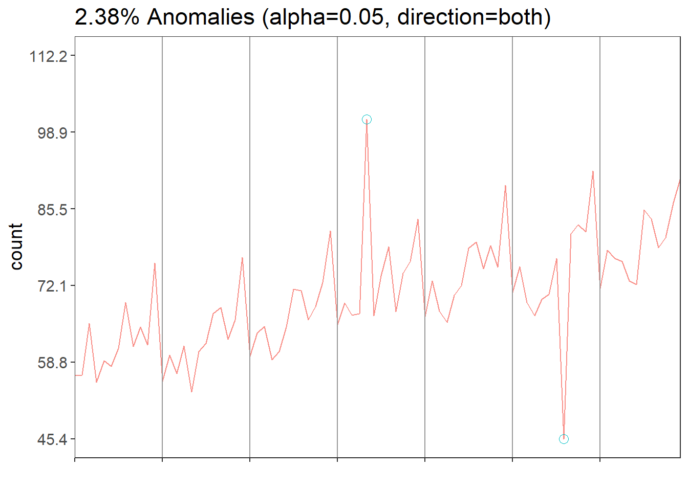
In Figure 47.4, the anomalies are marked with blue circles. They are also listed in the $anoms element of the output, with their positions and values. Position 41 is August 2021 and position 68 is November 2023. These are the two planted months. The March peaks are not flagged, because the algorithm has allowed for them as part of the season.
The office would now be asked to explain both months. For the spike, we may check whether some documents of other months were entered in August 2021, or whether one very large deal was registered. For the shortfall, we may compare the receipts booked with the documents registered in November 2023, and with the challans deposited in the treasury.
S-H-ESD assumes that the seasonal ups and downs stay about the same size over the years. In many financial series they grow along with the level. When that happens, the later peaks look unusual compared with the earlier ones, though they follow the same pattern. This is a common trap with growing financial series. We will see how to deal with it, by working on the log scale, in Section 47.11.
One big limitation of the methods so far is that they work on a single column, or a single series. In real audit work, data is rarely so simple. A vendor may be described by its total payments, number of bills, average bill and share of round amounts. An anomaly may show up only when all these are seen together. The k-Nearest Neighbour (kNN) method works on many columns at once.
The idea of kNN is that records which are close to each other are similar. For each record, we find its k nearest neighbours, and calculate the average distance to them. A record lying far away from even its nearest neighbours is likely to be an anomaly.
Distance between records is usually measured as the straight-line Euclidean distance. For this to be fair, all columns must be on the same scale. Otherwise a column measured in lakhs will swamp a column measured in single digits. So we must always scale the data first.
Let us take the vendors of a Zila Parishad. For each of its 60 vendors, the accounts section has worked out four indicators for the financial year 2023-24.
bills, the number of bills paid.avg_bill_lakh, the average bill, in ₹ lakh.round_pct, the percentage of bills in round amounts, that is, exact multiples of ₹ 1,000.days_to_pay, the median number of days between receipt of a bill and its payment.The vendors are of three kinds. Suppliers of materials send many small bills. Service providers send fewer, larger bills. Works contractors send a few very large bills. Three vendors have been planted at the end of the data. V-058 is a supplier with unusually large bills, mostly in round amounts, paid within days. V-059 is a supplier which looks ordinary, except that it is paid much faster than other suppliers. V-060 is a service provider whose bills look like those of a works contractor. We will come back to V-060 in Section 47.10.
set.seed(1804)
n_cat <- c(Supplies = 25, Services = 17, Works = 15)
first <- c("Shree Ganesh", "Om Sai", "Jai Ambe", "Maa Durga", "Balaji", "Ganga", "Laxmi",
"Shiv Shakti", "Krishna", "Narmada", "Sri Venkateswara", "Kaveri", "Annapurna",
"Bharat", "Gayatri", "Hanuman", "Mahalaxmi", "Saraswati", "Vishwakarma", "Umiya")
suffix <- c(Supplies = "Traders", Services = "Services", Works = "Constructions")
vendors <- tibble(category = rep(names(n_cat), n_cat)) |>
mutate(bills = round(case_when(category == "Supplies" ~ rnorm(n(), 48, 6),
category == "Services" ~ rnorm(n(), 24, 5),
TRUE ~ rnorm(n(), 8, 2))),
avg_bill_lakh = round(case_when(category == "Supplies" ~ rnorm(n(), 0.9, 0.12),
category == "Services" ~ rnorm(n(), 2.8, 0.5),
TRUE ~ rnorm(n(), 11, 1.6)), 2),
round_pct = round(runif(n(), 5, 25)),
days_to_pay = round(rnorm(n(), 32, 6)))
# Planted. V-058 far from everyone, V-059 a local oddity, V-060 a category mismatch
planted_vendors <- tibble(category = c("Supplies", "Supplies", "Services"),
bills = c(60, 44, 9),
avg_bill_lakh = c(4.6, 1.05, 10.5),
round_pct = c(85, 16, 15),
days_to_pay = c(4, 13, 31))
vendors <- bind_rows(vendors, planted_vendors) |>
mutate(vendor = sprintf("V-%03d", row_number()),
name = paste(sample(first, n(), replace = TRUE), suffix[category]),
category = factor(category),
.before = 1)glimpse(vendors)Rows: 60
Columns: 7
$ vendor <chr> "V-001", "V-002", "V-003", "V-004", "V-005", "V-006", "V…
$ name <chr> "Kaveri Traders", "Ganga Traders", "Bharat Traders", "Ba…
$ category <fct> Supplies, Supplies, Supplies, Supplies, Supplies, Suppli…
$ bills <dbl> 40, 51, 47, 49, 47, 50, 45, 54, 54, 51, 49, 50, 57, 46, …
$ avg_bill_lakh <dbl> 1.06, 0.75, 0.99, 0.92, 1.00, 0.99, 0.82, 1.07, 1.12, 1.…
$ round_pct <dbl> 6, 18, 23, 9, 15, 10, 15, 10, 7, 5, 20, 22, 22, 19, 19, …
$ days_to_pay <dbl> 34, 31, 29, 34, 27, 35, 27, 22, 33, 26, 40, 22, 36, 28, …tail(vendors, 4)# A tibble: 4 × 7
vendor name category bills avg_bill_lakh round_pct days_to_pay
<chr> <chr> <fct> <dbl> <dbl> <dbl> <dbl>
1 V-057 Krishna Constructio… Works 9 14.0 18 34
2 V-058 Laxmi Traders Supplies 60 4.6 85 4
3 V-059 Krishna Traders Supplies 44 1.05 16 13
4 V-060 Shiv Shakti Services Services 9 10.5 15 31The indicators are on very different scales. We use the scale() function of base R to normalise them. Remember that scale() returns a matrix, so we may need to convert it into a data frame for ggplot2. We also keep the vendor codes as row names, so that we can refer to vendors later.
Let us visualise the data, first in two dimensions only, the number of bills and the average bill. As the data is already scaled, we can also see all four dimensions together in a boxplot. Both are shown in Figure 47.5. The points are labelled with the last two digits of the vendor code.
vend_df <- vend_scaled |>
as.data.frame() |>
mutate(vendor = vendors$vendor, label = str_sub(vendor, -2))
vend_df |>
ggplot(aes(bills, avg_bill_lakh)) +
geom_point(color = "seagreen") +
ggrepel::geom_text_repel(aes(label = label), arrow = grid::arrow(), max.overlaps = 20) +
theme_bw()
# Helper Function
find_outlier <- function(x) {
return(x < quantile(x, .25) - 1.5*IQR(x) | x > quantile(x, .75) + 1.5*IQR(x))
}
vend_df |>
pivot_longer(all_of(indicators), names_to = "Dimension", values_to = "Values") |>
group_by(Dimension) |>
mutate(outlier = ifelse(find_outlier(Values), label, NA)) |>
ggplot(aes(Dimension, Values)) +
geom_boxplot(outlier.colour = "red") +
geom_text(aes(label = outlier), na.rm = TRUE, hjust = -.5) +
theme_bw()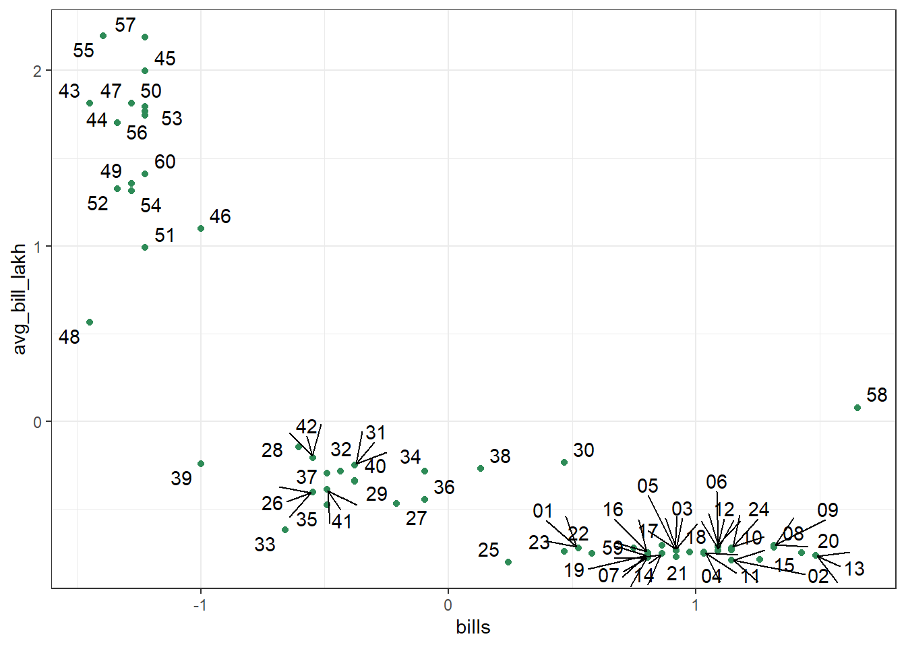
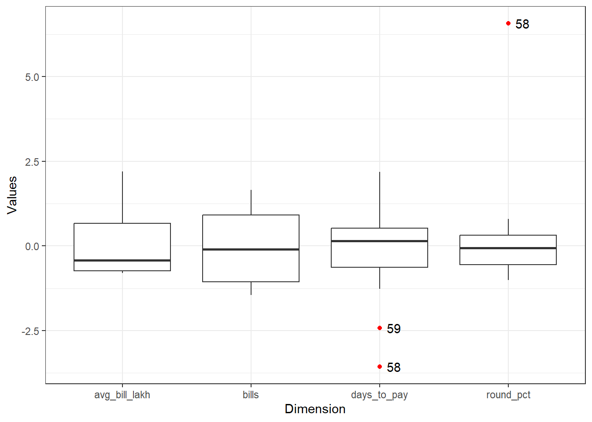
In the left panel, the three kinds of vendor form three groups, from many small bills to a few large ones. Vendor 58 sits apart from all three groups. In the right panel, it is the outlier on the round amounts and on the days to pay. Vendor 59 is also an outlier on the days to pay.
Now, let us find the outliers in R. We will use the get.knn() function from the FNN package. We must choose the value of k, the number of neighbours, beforehand. Let us take k = 5.
The object created above has two matrices, each with k columns. nn.index holds the row numbers of the nearest neighbours of each record. nn.dist holds the distances to them. Let us view the top 6 rows of each.
head(vendor_knn$nn.index) [,1] [,2] [,3] [,4] [,5]
[1,] 23 22 59 16 19
[2,] 10 24 6 12 15
[3,] 5 21 18 14 17
[4,] 11 18 6 12 3
[5,] 3 21 18 14 17
[6,] 12 10 11 24 4head(vendor_knn$nn.dist) [,1] [,2] [,3] [,4] [,5]
[1,] 0.059971590 0.06581837 0.22567982 0.28338626 0.28500369
[2,] 0.058758849 0.06779867 0.07826081 0.09532600 0.11292475
[3,] 0.002259956 0.03615929 0.05713677 0.05859313 0.06360851
[4,] 0.009039823 0.05682305 0.05859313 0.06825636 0.11393784
[5,] 0.002259956 0.03841925 0.05753762 0.05924328 0.06259679
[6,] 0.022599557 0.05659790 0.05682305 0.05802378 0.05859313Using rowMeans(), we can calculate the average distance of each record from its neighbours. This is the kNN score. The bigger the score, the more likely the record is an outlier. Let us store the score and show it as the size of the points. In Figure 47.6, the points lying far away are bigger, because their chance of being outliers is higher.
score <- rowMeans(vendor_knn$nn.dist)
vend_df |>
mutate(score = score) |>
ggplot(aes(bills, avg_bill_lakh)) +
geom_point(aes(size = score), color = "seagreen") +
ggrepel::geom_text_repel(aes(label = label), arrow = grid::arrow(), max.overlaps = 20) +
theme_bw() +
labs(title = "KNN method of outlier")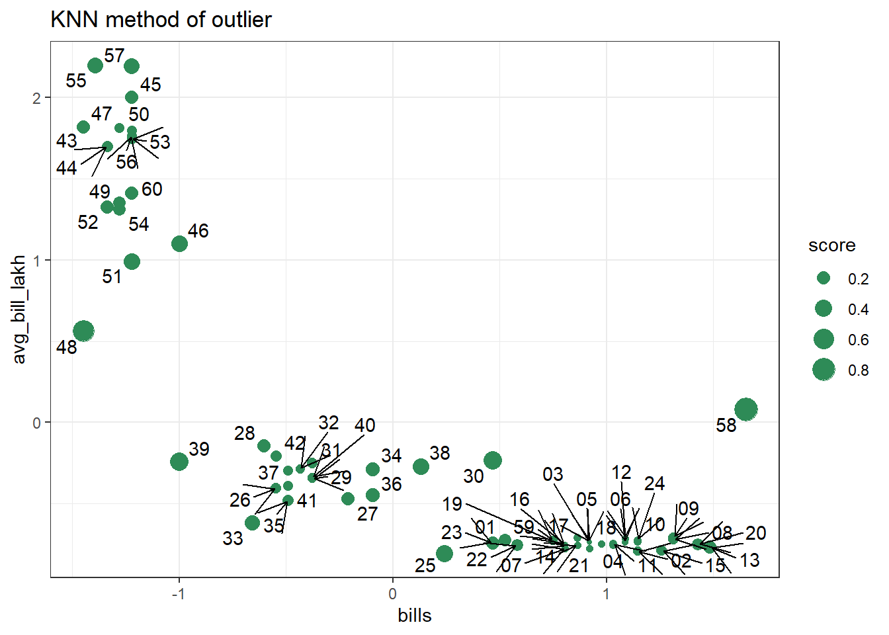
Now, we can run the algorithm on all four columns of the data.
V-058
58 V-058 V-059 V-052 V-039 V-048
6.80 1.61 1.16 1.13 1.08 On all four indicators, V-058 is far ahead of every other vendor, with a score of 6.8. V-059 comes next. It is a supplier which is paid much faster than its peers, a difference that did not show in the scatter plot of bills and average bill.
k?
There is no single correct value of k. A very small k, like 1 or 2, makes the score sensitive to chance. Two odd records lying close to each other will look normal, because each is the other’s nearest neighbour. A very large k blurs the picture. A value between 5 and 20 works well in most cases. It is a good practice to try two or three values and see whether the same records come out on top.
kNN is good at finding records which are far from all others. These are sometimes called global anomalies. But it can miss records which lie close to a group, yet are not like their immediate neighbours. These are called local anomalies.
To understand the difference, see the dummy data in Figure 47.7. Think of it as sales and profit of branches of a company.
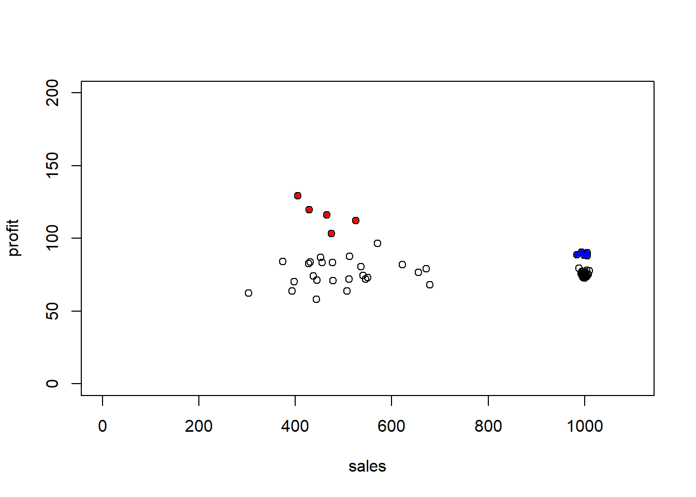
The red points are global outliers. They are far from everything else. The blue points are not far from the tight group on the right. But that group is very tightly packed, and the blue points do not share its tightness. So they are local anomalies. kNN may miss them, because their distance from the group is small in absolute terms.
The Local Outlier Factor (LOF) solves this. Instead of distance, it looks at density, that is, how crowded the neighbourhood of a record is. It compares the density around each record with the density around its neighbours.
We will use the lof() function from the dbscan package. Its second argument is the number of neighbours to consider, like k in kNN. Let us apply it to the same vendor data, using all four indicators.
library(dbscan)
lof_score <- lof(vend_scaled, 5)
vend_df |>
mutate(score = lof_score) |>
ggplot(aes(bills, avg_bill_lakh)) +
geom_point(aes(size = score), color = "seagreen") +
ggrepel::geom_text_repel(aes(label = label), arrow = grid::arrow(), max.overlaps = 20) +
scale_size_continuous(guide = "none") +
theme_bw() +
labs(title = "LOF method of outlier")
vend_prcomp <- prcomp(vend_scaled, scale. = TRUE)
vend_df |>
mutate(score = lof_score,
PC1 = vend_prcomp$x[,1],
PC2 = vend_prcomp$x[,2]) |>
ggplot(aes(PC1, PC2)) +
geom_point(aes(size = score), color = "seagreen") +
ggrepel::geom_text_repel(aes(label = label), arrow = grid::arrow(), max.overlaps = 20) +
scale_size_continuous(guide = "none") +
theme_bw() +
labs(title = "LOF method of outlier\nVisualised on principal components")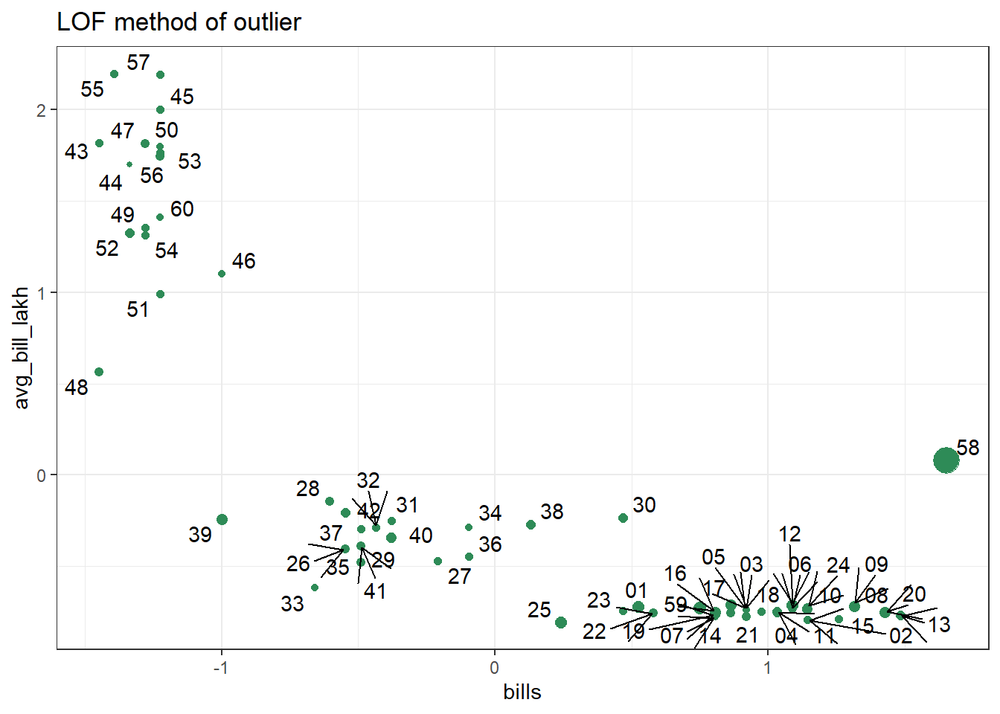
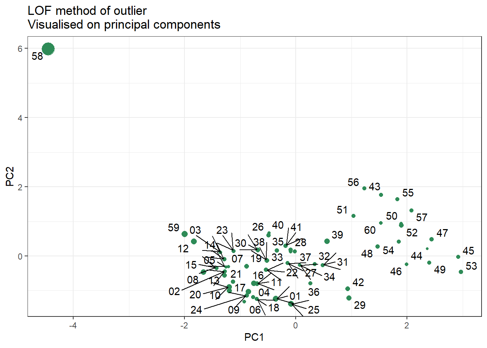
In Figure 47.8 (left), we have plotted the data in two dimensions only, though LOF was calculated on all four. So vendor 59, which has the second highest LOF score, sits right inside the group of suppliers in this plot. It is a local anomaly. Its bills look like those of any supplier, but it is paid much faster than the suppliers around it.
To see all four dimensions in one picture, we can use the first two principal components (Figure 47.8, right). Principal components combine many columns into a few new columns which keep most of the information. We learnt about them in Chapter 43. For now, it is enough to know that they give a fair two-dimensional picture of four-dimensional data.
Let us also compare the biggest anomalies according to each method.
# Biggest Anomaly - kNN
which.max(score)V-058
58 # Biggest Anomaly - LOF
which.max(lof_score)[1] 58# A tibble: 5 × 2
knn lof
<chr> <chr>
1 V-058 V-058
2 V-059 V-059
3 V-052 V-025
4 V-039 V-012
5 V-048 V-001Both methods put V-058 first and V-059 second. Below the top two, the lists differ. This will often happen. kNN looks for records far from all others. LOF looks for records unlike their own neighbourhood. In our data the two planted vendors are both, so both methods find them. In other data the top records may differ, and each method may catch a case that the other misses. Both are useful, and they answer slightly different questions.
Histograms of both kNN and LOF scores can also be drawn, as in Figure 47.9. In both, most records have low scores, and a few stand apart on the right.
kNN and LOF give scores, not a yes or no answer. Sort the records by score and examine them from the top, until the cases stop being interesting. The histogram of scores helps decide where to stop. Look for the point where the long tail on the right begins.
Isolation Forest takes a completely different approach. It does not measure distance or density. Instead, it asks a simple question. How easy is it to separate this record from all the others?
Imagine we pick a column at random, and a random cut-point within its range. This splits the data into two parts. We repeat this on each part, again and again, until every record sits alone. Such a series of random splits is called an isolation tree. A normal record, sitting in a crowd, needs many splits before it is alone. An anomaly, sitting far from the crowd, gets separated in very few splits. So the number of splits (the path length in the tree) tells us how unusual a record is.
One tree is based on random choices, so its result can vary. A forest is a collection of many such trees. Averaging over many trees gives a stable score.
We will use the isotree package, which is available on CRAN. The main function is isolation.forest(). Its argument ntrees sets the number of trees. sample_size sets how many records are drawn to build each tree. We also set ndim = 1, which gives the classic isolation forest that splits on one column at a time, and a seed so that the results can be reproduced.
An older package, isofor, is sometimes mentioned in tutorials, but it is available only on GitHub and is no longer maintained. isotree does the same job, is faster, and is regularly updated on CRAN. It can be installed with install.packages("isotree").
Let us work on the same vendor indicators as above. First, let us build a single tree.
library(isotree)
# Generate a single tree
vendor_tree_1 <- isolation.forest(vend_scaled, ntrees = 1, sample_size = 50,
ndim = 1, seed = 1, nthreads = 1)
# Generate isolation score
iso_score_1 <- predict(vendor_tree_1, vend_scaled)
# View first 10 scores
iso_score_1[1:10] V-001 V-002 V-003 V-004 V-005 V-006 V-007 V-008
0.5519703 0.6094383 0.5519703 0.5519703 0.5519703 0.4679782 0.6728896 0.5519703
V-009 V-010
0.5519703 0.5519703 Score interpretation. The scores lie between 0 and 1. The closer a score is to 1, the more likely the record is an anomaly. Scores below 0.5 usually mean normal records.
Let us visualise the scores on the principal component plot again (Figure 47.10).
vend_df |>
mutate(score = iso_score_1,
PC1 = vend_prcomp$x[,1],
PC2 = vend_prcomp$x[,2]) |>
ggplot(aes(PC1, PC2)) +
geom_point(aes(size = score), color = "seagreen") +
ggrepel::geom_text_repel(aes(label = label), arrow = grid::arrow(), max.overlaps = 20) +
scale_size_continuous(guide = "none") +
theme_bw() +
labs(title = "Isolation Tree based outlier\nVisualised on principal components")
vend_df |>
mutate(score = iso_score_1,
PC1 = vend_prcomp$x[,1],
PC2 = vend_prcomp$x[,2],
is_outlier = factor(ifelse(ntile(iso_score_1, 10) >= 10, "O", "N"))) |>
ggplot(aes(PC1, PC2)) +
geom_point(aes(size = score, color = is_outlier)) +
ggrepel::geom_text_repel(aes(label = label), arrow = grid::arrow(), max.overlaps = 20) +
scale_color_manual(values = c(O = "red", N = "black"), guide = "none") +
scale_size_continuous(guide = "none") +
theme_bw() +
labs(title = "Isolation Tree based outlier\nTop-10%")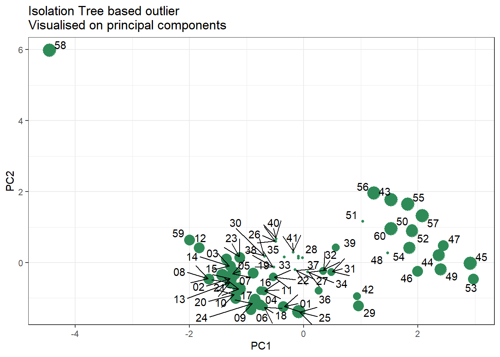
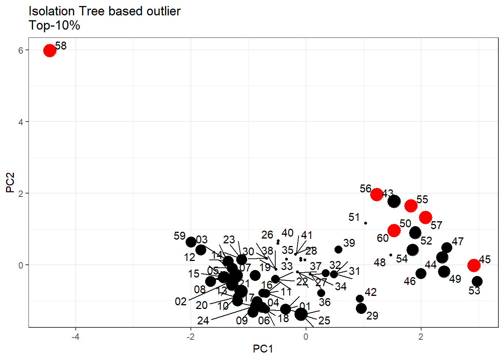
In the right panel, the top 10% of records by score are shown in red. ntile(x, 10) divides the records into ten equal groups by score, so group 10 is the top 10%.
Let us now build a forest of 100 trees (Figure 47.11). The right panel compares the scores of one tree with those of the forest. If both gave the same scores, all points would lie on the diagonal line. They do not, because a single tree depends heavily on its random splits. As the number of trees increases, the scores become stable.
iso_100 <- isolation.forest(vend_scaled, ntrees = 100, sample_size = 50,
ndim = 1, seed = 1, nthreads = 1)
# Generate scores
iso_score_100 <- predict(iso_100, vend_scaled)
# View Results
vend_df |>
mutate(score = iso_score_100,
PC1 = vend_prcomp$x[,1],
PC2 = vend_prcomp$x[,2],
is_outlier = factor(ifelse(ntile(iso_score_100, 10) >= 10, "O", "N"))) |>
ggplot(aes(PC1, PC2)) +
geom_point(aes(size = score, color = is_outlier)) +
ggrepel::geom_text_repel(aes(label = label), arrow = grid::arrow(), max.overlaps = 20) +
scale_color_manual(values = c(O = "red", N = "black"), guide = "none") +
scale_size_continuous(guide = "none") +
theme_bw() +
labs(title = "Isolation Tree based outlier\nNumber of Trees = 100")
plot(iso_score_1, iso_score_100, xlim = c(0, 1), ylim = c(0, 1),
main = "Comparison of Tree Vs. Forest Method")
abline(a = 0, b = 1)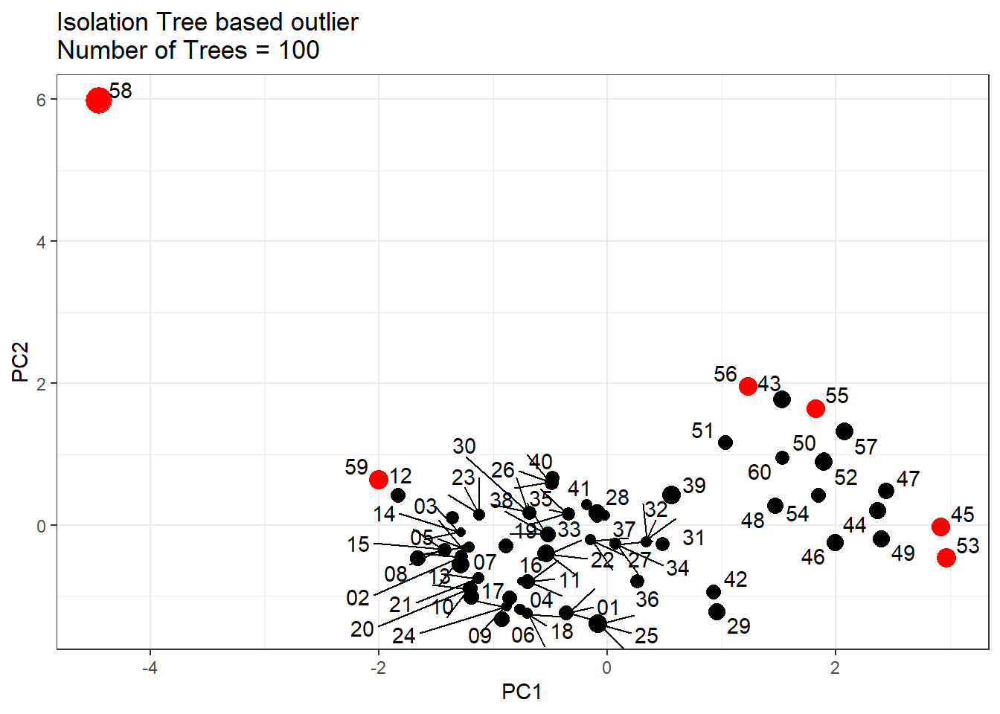
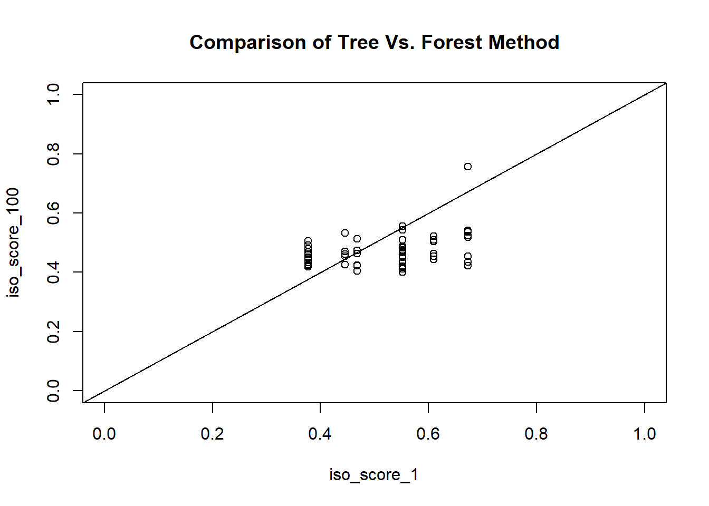
Let us list the vendors with the highest forest scores.
# A tibble: 5 × 8
vendor name category bills avg_bill_lakh round_pct days_to_pay iso_score
<chr> <chr> <fct> <dbl> <dbl> <dbl> <dbl> <dbl>
1 V-058 Laxmi Tra… Supplies 60 4.6 85 4 0.76
2 V-053 Laxmi Con… Works 9 12.0 8 49 0.56
3 V-025 Shree Gan… Supplies 35 0.69 5 36 0.54
4 V-045 Sri Venka… Works 9 13.1 11 47 0.54
5 V-055 Mahalaxmi… Works 6 14.0 16 27 0.54V-058 is at the top by a clear margin, with a score of 0.76. V-059, the supplier paid unusually fast, is at position 3. The scores after the top one are close together, so the forest separates the far-away vendor much more sharply than the local oddity. This is typical. Isolation forest is best at global anomalies.
Contour plots. We can also show the anomaly scores of a whole area as a contour plot, like the height lines of a map. We build a fine grid of points covering the first two principal components, score every grid point, and draw lines joining equal scores. See Figure 47.12. Records falling in the high-score regions are anomalies.
# Create PRCOMP data
df_grid <- data.frame(
PC1 = vend_prcomp$x[,1],
PC2 = vend_prcomp$x[,2]
)
# Create Sequences
pc1_seq <- seq(min(vend_prcomp$x[,1]), max(vend_prcomp$x[,1]), length.out = 25)
pc2_seq <- seq(min(vend_prcomp$x[,2]), max(vend_prcomp$x[,2]), length.out = 25)
# Create Grid
my_grid <- expand.grid(PC1 = pc1_seq, PC2 = pc2_seq)
# Create model for Pr comp
iso_model <- isolation.forest(df_grid, ntrees = 100, sample_size = 50,
ndim = 1, seed = 1, nthreads = 1)
# append scores
my_grid$scores <- predict(iso_model, my_grid)
# Draw Plot
library(lattice)
contourplot(scores ~ PC1 + PC2, data = my_grid, region = TRUE)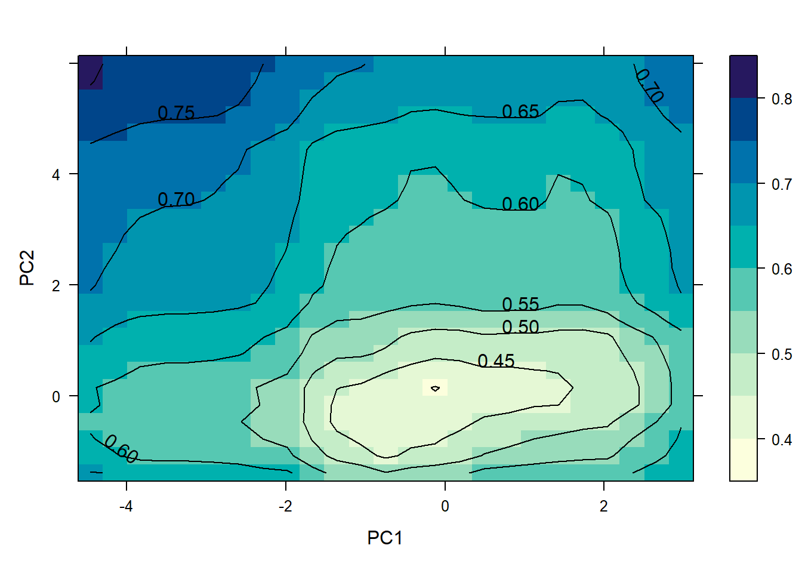
Including categorical variables. One benefit of the isolation forest is that it can use categorical columns directly. The only condition is that they should be of factor type.
Let us now find anomalies in the vendor data again, this time including the category column. We keep the four indicators unscaled, since an isolation forest does not need scaling. We can check the column types before proceeding.
vendors_mixed <- vendors |> select(category, all_of(indicators))
sapply(vendors_mixed, class) category bills avg_bill_lakh round_pct days_to_pay
"factor" "numeric" "numeric" "numeric" "numeric" Our condition is met, as category is already a factor. So we can build the forest directly. Refer Figure 47.13.
# New isolation forest model, including category
iso_model_new <- isolation.forest(vendors_mixed, ntrees = 100, ndim = 1,
seed = 1, nthreads = 1)
new_scores <- predict(iso_model_new, vendors_mixed)
head(new_scores) 1 2 3 4 5 6
0.4453272 0.4425183 0.4268078 0.4078696 0.4073524 0.4302865 # Principal components of the four indicators, for the picture
vend_pr <- prcomp(vendors_mixed[, indicators], scale. = TRUE)
data.frame(
PC1 = vend_pr$x[,1],
PC2 = vend_pr$x[,2]
) |>
mutate(score = new_scores,
category = vendors$category,
label = str_sub(vendors$vendor, -2)) |>
ggplot(aes(PC1, PC2, color = category)) +
geom_point(aes(size = score)) +
ggrepel::geom_text_repel(aes(label = ifelse(score > quantile(score, 0.9), label, "")),
show.legend = FALSE) +
guides(size = "none") +
theme_bw() +
labs(title = "Isolation Forest\nVisualised on Principal Components")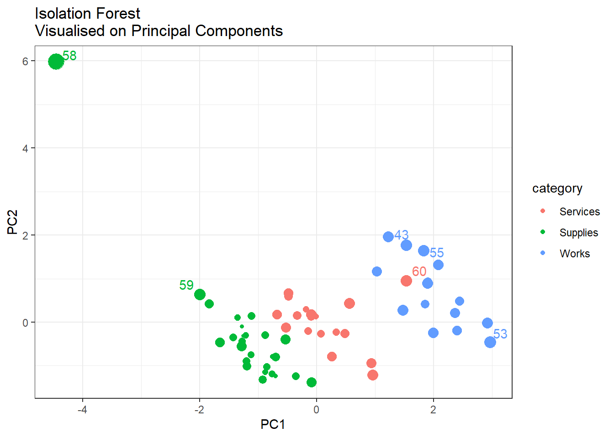
With the category included, V-060 moves up from position 38 to position 4. It is a service provider whose bills look like a works contractor’s. The forest can now see that its numbers do not fit its category. In Figure 47.13 the ten per cent of vendors with the highest scores are labelled.
Isolation forest is a good default for large audit data. It is fast, needs no scaling, handles many columns, and accepts categorical columns. A common practice is to run it on a table of indicators built for each vendor, employee or beneficiary. Then examine the top 1% or top 50 records by score.
We can also include categorical variables in the Local Outlier Factor, using the Gower distance. Gower distance can measure the distance between records which have both numeric and categorical columns, even when the categories have no natural order. It is calculated with the function daisy() from the cluster package. Let us calculate LOF scores on the vendor data, including category. The result is shown in Figure 47.14.
library(cluster)
vendor_dist <- daisy(vendors_mixed, metric = "gower")
vendor_lof <- lof(vendor_dist, minPts = 5)
data.frame(
PC1 = vend_pr$x[,1],
PC2 = vend_pr$x[,2]
) |>
mutate(score = vendor_lof,
category = vendors$category,
label = str_sub(vendors$vendor, -2)) |>
ggplot(aes(PC1, PC2, color = category)) +
geom_point(aes(size = score)) +
ggrepel::geom_text_repel(aes(label = ifelse(score > quantile(score, 0.9), label, "")),
show.legend = FALSE) +
guides(size = "none") +
theme_bw() +
labs(title = "LOF Scores\nVisualised on Principal Components")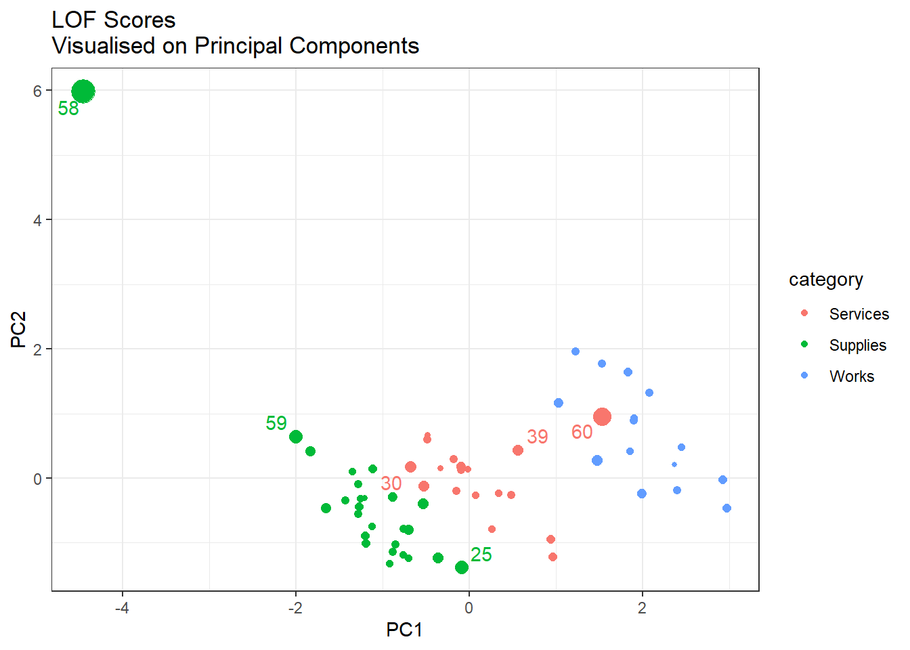
# A tibble: 5 × 6
vendor category bills avg_bill_lakh lof_numeric lof_gower
<chr> <fct> <dbl> <dbl> <dbl> <dbl>
1 V-058 Supplies 60 4.6 8.78 6.58
2 V-060 Services 9 10.5 0.97 3.55
3 V-059 Supplies 44 1.05 1.73 2.04
4 V-025 Supplies 35 0.69 1.63 1.96
5 V-030 Services 39 3.22 1.22 1.48On the four numbers alone, V-060 was at position 50 by LOF. With the category included through Gower distance, it rises to position 2. Its nearest neighbours are works contractors, and it is the only one among them labelled as a service provider. The auditor would now ask why a service provider is raising bills of the size of works contracts. Was the work split from a works contract to avoid a tender? Was the firm registered under the wrong category?
kNN and LOF need a distance between every pair of records. For numbers this is easy. But what is the distance between “Air” and “Sleeper”, or between “Group A” and “Group C”? Gower distance answers this in a simple way.
So every column contributes equally, and the final distance is always between 0 and 1. This is why we did not have to scale the data before using daisy().
Let us see why including categorical columns can make a real difference. Consider travel allowance (TA) claims of employees. Each claim records the grade of the employee, the mode of travel, the distance travelled and the amount claimed. Suppose the entitlement rules are as below.
| Grade | Entitled to travel by |
|---|---|
| Group A | Air or AC-2 |
| Group B | AC-2 or AC-3 |
| Group C | AC-3 or Sleeper |
We have about 300 claims, created in the folded code below. Three problem claims have been planted. Two Group C employees have claimed air fare. Their amounts are quite normal for an air journey of that distance. The third claim is an AC-3 journey with a hugely inflated amount.
set.seed(2611)
entitled <- list(`Group A` = c("Air", "AC-2"),
`Group B` = c("AC-2", "AC-3"),
`Group C` = c("AC-3", "Sleeper"))
rate_per_km <- c(Air = 6, `AC-2` = 2.6, `AC-3` = 1.8, Sleeper = 0.7)
n <- 300
claims <- tibble(grade = sample(names(entitled), n, replace = TRUE,
prob = c(0.25, 0.35, 0.4))) |>
mutate(mode = map_chr(grade, \(g) sample(entitled[[g]], 1)),
distance_km = round(runif(n, 200, 1800)),
amount = round(distance_km * rate_per_km[mode] * 2 *
runif(n, 0.9, 1.15) + 500))
planted <- tibble(grade = c("Group C", "Group C", "Group B"),
mode = c("Air", "Air", "AC-3"),
distance_km = c(1150, 1420, 900),
amount = c(14300, 17600, 41000))
claims <- bind_rows(claims, planted) |>
mutate(claim_id = sprintf("TA-%03d", row_number()), .before = 1)tail(claims, 4)# A tibble: 4 × 5
claim_id grade mode distance_km amount
<chr> <chr> <chr> <dbl> <dbl>
1 TA-300 Group B AC-3 745 3503
2 TA-301 Group C Air 1150 14300
3 TA-302 Group C Air 1420 17600
4 TA-303 Group B AC-3 900 41000Step 1. LOF on numeric columns only. First, let us do what we did earlier in this chapter. We use only the two numeric columns, distance and amount, scale them, and calculate LOF.
# A tibble: 5 × 6
claim_id grade mode distance_km amount lof_numeric
<chr> <chr> <chr> <dbl> <dbl> <dbl>
1 TA-303 Group B AC-3 900 41000 6.37
2 TA-042 Group A Air 255 3862 2.10
3 TA-284 Group A Air 287 4319 1.83
4 TA-072 Group A Air 304 3948 1.80
5 TA-175 Group A AC-2 1795 9694 1.76The inflated AC-3 claim, TA-303, is at the top, with a very high score. That is good. But the two Group C air claims are nowhere near the top. This is not surprising. Looking at distance and amount alone, these claims look exactly like the many genuine air claims of Group A officers.
Step 2. LOF with categorical columns, using Gower distance. Now we include grade and mode of travel as well. daisy() needs categorical columns as factors, so we convert them first.
# A tibble: 5 × 7
claim_id grade mode distance_km amount lof_numeric lof_gower
<chr> <chr> <chr> <dbl> <dbl> <dbl> <dbl>
1 TA-303 Group B AC-3 900 41000 6.37 14.1
2 TA-301 Group C Air 1150 14300 1.06 6.10
3 TA-302 Group C Air 1420 17600 0.987 5.72
4 TA-004 Group B AC-2 1756 9706 1.50 2.43
5 TA-106 Group B AC-2 1715 8783 1.07 1.99Now all three planted claims are at the top. A Group C employee travelling by air is a rare combination in the data, and Gower distance makes that rarity visible to LOF.
Let us compare the rank of the three claims under both methods. A rank of 1 means the most anomalous claim.
# A tibble: 3 × 6
claim_id grade mode amount rank_numeric rank_gower
<chr> <chr> <chr> <dbl> <dbl> <dbl>
1 TA-301 Group C Air 14300 83 2
2 TA-302 Group C Air 17600 222 3
3 TA-303 Group B AC-3 41000 1 1If the rules are known and simple, as in our entitlement table, a direct rule-based check is better. Just join the claims with the entitlement table and list every claim where the mode is not allowed for the grade. Anomaly detection is useful when the rules are not known, are too many to code, or when we want to discover patterns that nobody has thought of. In practice, use both.
In time series data, an anomaly is a value which does not follow the usual trend, seasonal pattern or cycle of the series, and is clearly different from the rest of the data.
To detect such anomalies in R, we will use the package timetk. This package works on a tibble (data frame) with a date column, instead of a ts object. So we may need to prepare our data accordingly.
Let us return to the monthly receipts of the sub-registrar office, which we used for the Seasonal Hybrid ESD algorithm in Section 47.6. Our receipts tibble already has a date column, month, so it is ready for timetk. We tell it that the season repeats every 12 months, with .frequency = 12.
library(timetk)
receipts |>
plot_anomaly_diagnostics(month, receipts_lakh, .frequency = 12,
.interactive = FALSE)
receipts |>
tk_anomaly_diagnostics(month, receipts_lakh, .frequency = 12) |>
filter(anomaly == 'Yes') |>
select(month, observed, season, trend, remainder)# A tibble: 2 × 5
month observed season trend remainder
<date> <dbl> <dbl> <dbl> <dbl>
1 2021-08-01 101. -5.40 71.3 35.1
2 2023-11-01 45.4 5.33 77.0 -37.0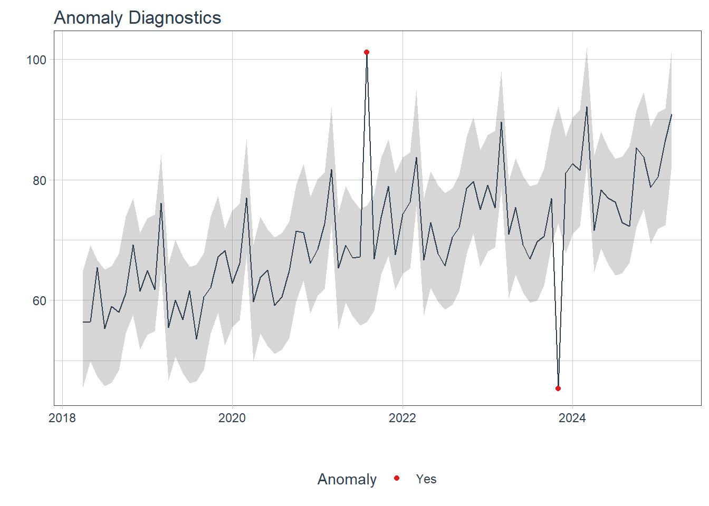
We can see the anomalies highlighted in red in Figure 47.15, and listed by the code above. They are the same two planted months, August 2021 and November 2023, that S-H-ESD found. When two different methods agree, the lead is stronger.
tk_anomaly_diagnostics() works in two steps.
So a value is called an anomaly only if it cannot be explained by the trend and the usual seasonal pattern. We learnt about these components of a time series in Chapter 46.
Every auditor in government knows the March rush. Offices spend much more in March than in other months, to use up the budget before the financial year ends. So a high expenditure in March is expected. What an auditor wants to find is a month which is unusual even after allowing for this pattern.
Let us create six years of monthly expenditure of an office, from April 2019 to March 2025, in ₹ lakh. The expenditure grows a little every year, and March is always much higher than other months. We have planted one odd month, October 2023, when some unusual payments were made.
set.seed(2611)
months <- seq(as.Date("2019-04-01"), as.Date("2025-03-01"), by = "month")
# Seasonal pattern from April to March. March is the rush month.
season <- c(0.8, 0.85, 0.9, 0.9, 0.95, 0.95, 1, 1, 1.05, 1.1, 1.3, 2.4)
position_in_fy <- ((month(months) + 8) %% 12) + 1 # April = 1, ..., March = 12
expenditure <- tibble(
month = months,
amount = round(40 * 1.06^(seq_along(months) / 12) * season[position_in_fy] *
runif(length(months), 0.92, 1.08), 2)
)
# Planted case. Unusual payments in October 2023.
odd <- expenditure$month == as.Date("2023-10-01")
expenditure$amount[odd] <- expenditure$amount[odd] * 2.3head(expenditure)# A tibble: 6 × 2
month amount
<date> <dbl>
1 2019-04-01 34.6
2 2019-05-01 32.3
3 2019-06-01 34.6
4 2019-07-01 37.9
5 2019-08-01 41.4
6 2019-09-01 40.1Attempt 1. A simple boxplot rule. Let us first try what we learnt at the start of this chapter, using boxplot.stats().
outliers <- boxplot.stats(expenditure$amount)$out
expenditure |>
filter(amount %in% outliers)# A tibble: 8 × 2
month amount
<date> <dbl>
1 2020-03-01 109.
2 2021-03-01 110.
3 2022-03-01 115.
4 2023-03-01 128.
5 2023-10-01 122.
6 2024-03-01 131.
7 2025-02-01 79.2
8 2025-03-01 145. Every single March has been flagged, along with October 2023. Even February 2025 is flagged, only because expenditure has grown over the years and recent months are naturally higher. This is not useful. The March peaks are the normal pattern of this office, and the one really odd month is lost in the crowd.
Attempt 2. Allowing for the season. Now let us use tk_anomaly_diagnostics(). We tell it that the season repeats every 12 months, with .frequency = 12.
expenditure |>
tk_anomaly_diagnostics(month, amount, .frequency = 12, .message = FALSE) |>
filter(anomaly == "Yes") |>
select(month, observed, season, trend, remainder)# A tibble: 4 × 5
month observed season trend remainder
<date> <dbl> <dbl> <dbl> <dbl>
1 2020-03-01 109. 73.1 48.5 -13.1
2 2021-03-01 110. 73.1 49.9 -13.0
3 2022-03-01 115. 73.1 53.4 -11.9
4 2023-10-01 122. -6.17 58.8 69.7This is much better. October 2023 is flagged. But so are a few early Marches. Why? Look at how the March peak behaves. It is not a fixed amount above other months. It is a fixed proportion, about 2.4 times a normal month. As total expenditure grows over the years, the March peak grows in rupees too. STL expects a season of the same size every year, so it gets the early Marches slightly wrong.
Attempt 3. Working on the log scale. The fix is simple. We take the logarithm of the amounts. On the log scale, “2.4 times” becomes a fixed difference, whatever the size of the expenditure. So the seasonal pattern becomes the same size every year.
expenditure |>
mutate(log_amount = log(amount)) |>
tk_anomaly_diagnostics(month, log_amount, .frequency = 12, .message = FALSE) |>
filter(anomaly == "Yes") |>
select(month, observed, remainder)# A tibble: 1 × 3
month observed remainder
<date> <dbl> <dbl>
1 2023-10-01 4.81 0.840Now only October 2023 is flagged. This is exactly the month we planted. The same result can be seen in Figure 47.16.
expenditure |>
mutate(log_amount = log(amount)) |>
plot_anomaly_diagnostics(month, log_amount, .frequency = 12,
.interactive = FALSE, .message = FALSE,
.title = "Monthly expenditure (log scale)")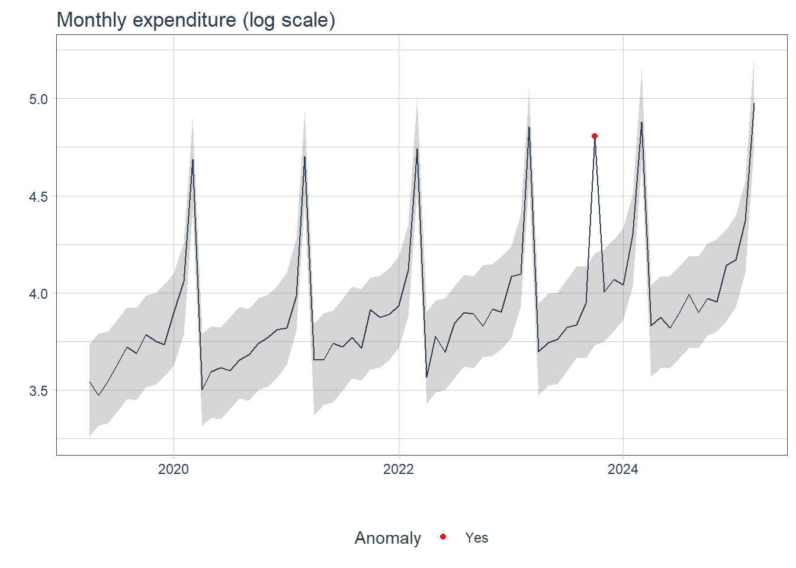
Use the log scale whenever the ups and downs of a series grow along with its level. This is true of most financial data, like expenditure, revenue, sales or tax collections. A quick look at a line plot of the data will tell you. If the March peaks get taller over the years, use the log.
The seasonal method treats the March rush as normal, because it happens every year. But for an auditor, the rush itself may be a finding. Ministry of Finance guidelines on expenditure management require that expenditure in March should not exceed 15% of the budget for the year. We can check this directly, by finding the share of March in each financial year’s expenditure.
# A tibble: 6 × 4
fin_year total march march_share_pct
<dbl> <dbl> <dbl> <dbl>
1 2019 565. 109. 19.2
2 2020 562. 110. 19.6
3 2021 620. 115. 18.5
4 2022 658. 128. 19.5
5 2023 768. 131. 17.1
6 2024 750. 145. 19.3Here fin_year 2019 means the financial year 2019-20, and so on. In every year, March accounts for more than 15% of the annual expenditure.
The time series methods of Section 47.11 find single periods that are unusual. Sometimes the question is different. When did a series shift to a new level, and stay there? A vendor’s rate that steps up when a new officer takes charge, a sudden and lasting rise in a hospital’s claims after it was empanelled with a new third-party administrator, or collections that drop after a change in the inspection system. Such a lasting shift is not one odd month, so methods looking for odd months may miss it. Change point detection looks for exactly these shifts.
Let us take the rate charged per bag of cement by one supplier to a public works division, month by month for four years.
The package changepoint finds the points where the mean of a series changes, with cpt.mean(). The PELT method searches efficiently for any number of change points. One preparation is needed. The function measures changes in units of the series’ natural month-to-month noise, and assumes that noise has a standard deviation of 1. So we first divide the series by a robust estimate of its noise, the MAD of the month-to-month differences divided by \(\sqrt{2}\).
[1] 11 12 30cpts() gives the positions after which the mean changes. They are 11, 12, 30. Let us read them with the dates. The changes after months 11 and 12 enclose a single month, March 2022. That is the one-off spike, a point anomaly, which the method sees as a tiny segment of its own. The change after month 30, September 2023, is the lasting shift. The average rate in each segment shows its size.
# A tibble: 4 × 5
segment from to months mean_rate
<fct> <date> <date> <int> <dbl>
1 (0,11] 2021-04-01 2022-02-01 11 366
2 (11,12] 2022-03-01 2022-03-01 1 440
3 (12,30] 2022-04-01 2023-09-01 18 368
4 (30,48] 2023-10-01 2025-03-01 18 405cement |>
mutate(segment = cut(row_number(), breaks = c(0, cps, nrow(cement)))) |>
mutate(segment_mean = mean(rate), .by = segment) |>
ggplot(aes(month, rate)) +
geom_line(colour = "grey50") +
geom_point() +
geom_step(aes(y = segment_mean), colour = "red", linewidth = 1, direction = "mid") +
labs(x = NULL, y = "Rate per bag (₹)") +
theme_minimal()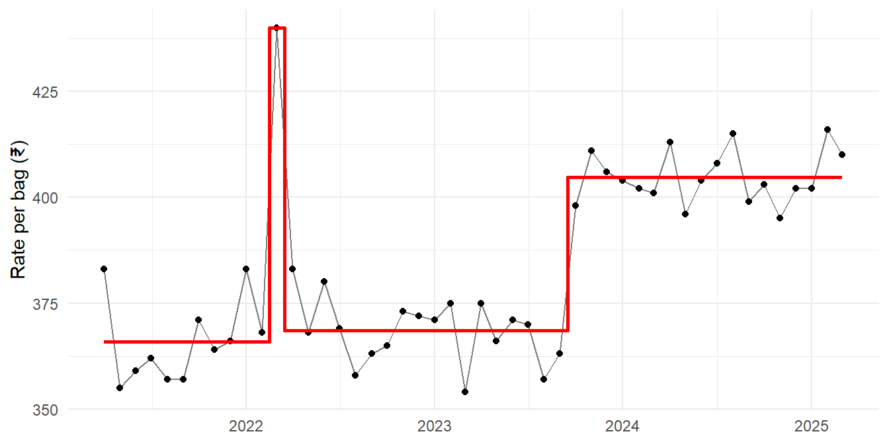
From October 2023, the supplier has charged about ₹37 more per bag, month after month. The audit questions follow naturally. Did the market rate rise at the same time? Did other suppliers’ rates rise too? Was the rate contract revised, and by whom? Did anything else change that month, like the officer in charge?
Run change point detection on many series at once, say the rate of every major item from every supplier, with map() (Section 7.5), and list the series with a lasting shift, the date and the size of the shift. Then compare the dates with known events, such as rate revisions, transfers of officers and new contracts. A shift with no explanation is a strong lead. cpt.meanvar() looks for changes in both the mean and the variability, which can reveal, for example, a period when rates suddenly stopped varying, as if copied.
Each method in this chapter sees anomalies in its own way. A robust z-score sees one extreme measure. The Mahalanobis distance sees a broken relationship. An isolation forest sees records that are easy to separate from the rest, and LOF sees records unlike their own neighbours. A record flagged by several methods is a stronger lead than one flagged by a single method, and different methods catch different kinds of irregularity. So in practice we run several, and combine their verdicts into one ranked list for examination.
The scores of different methods are on different scales. A z-score may be 4, a Mahalanobis distance 25 and an isolation score 0.6. They cannot be added directly. The simplest fair way is to convert each method’s scores into ranks, or rather percentile ranks between 0 and 1, and average them. A record which every method places near the top gets a combined score near 1.
Let us add a third measure to our PHC data, medicine expenditure, and plant two more cases of different kinds.
set.seed(21)
phc <- phc |>
mutate(medicine_lakh = round(opd * 120 * rlnorm(n(), 0, 0.15) / 1e5, 2))
# Planted. PHC-140 spends far more on medicines than its OPD explains
phc$medicine_lakh[140] <- round(phc$medicine_lakh[140] * 2.6, 2)
# Planted. PHC-021 reports far less of everything than any other PHC
phc$opd[21] <- round(min(phc$opd) * 0.45)
phc$deliveries[21] <- max(1, round(min(phc$deliveries) * 0.45))
phc$medicine_lakh[21] <- round(min(phc$medicine_lakh) * 0.45, 2)Now we score every PHC with four methods. All of them work on the logarithms of the three measures.
library(isotree)
library(dbscan)
logs <- phc |> transmute(l_opd = log(opd), l_del = log(deliveries), l_med = log(medicine_lakh))
scores <- phc |>
transmute(
phc,
# 1. largest robust z-score among the three measures, and medicine per OPD patient
robust_z = pmax(abs(robust_z(logs$l_opd)), abs(robust_z(logs$l_del)),
abs(robust_z(logs$l_med)), abs(robust_z(logs$l_med - logs$l_opd))),
# 2. robust Mahalanobis distance
mahal = {
fit <- MASS::cov.rob(as.matrix(logs), method = "mcd")
mahalanobis(as.matrix(logs), fit$center, fit$cov)
},
# 3. isolation forest score
iforest = {
set.seed(1)
predict(isolation.forest(logs, ntrees = 200), logs)
},
# 4. local outlier factor, on scaled values
lof = lof(scale(logs), minPts = 10)
)Each column is a score where higher means more unusual. Now we turn each into a percentile rank with percent_rank(), and average.
combined <- scores |>
mutate(across(c(robust_z, mahal, iforest, lof), percent_rank, .names = "pr_{.col}")) |>
mutate(combined = (pr_robust_z + pr_mahal + pr_iforest + pr_lof) / 4) |>
arrange(desc(combined))
combined |>
select(phc, starts_with("pr_"), combined) |>
mutate(across(where(is.numeric), \(x) round(x, 3))) |>
head(8)# A tibble: 8 × 6
phc pr_robust_z pr_mahal pr_iforest pr_lof combined
<chr> <dbl> <dbl> <dbl> <dbl> <dbl>
1 PHC-021 0.995 0.995 1 1 0.997
2 PHC-140 1 1 0.98 0.995 0.994
3 PHC-102 0.99 0.985 0.899 0.985 0.965
4 PHC-001 0.98 0.96 0.975 0.94 0.964
5 PHC-147 0.975 0.955 0.995 0.92 0.961
6 PHC-193 0.97 0.93 0.985 0.955 0.96
7 PHC-158 0.935 0.869 0.99 0.935 0.932
8 PHC-128 0.96 0.899 0.97 0.889 0.93 PHC-021 and PHC-140 top the list. But where is PHC-077, the PHC whose deliveries were out of line with its OPD? It is at position 22. Let us see how each method ranked the three planted PHCs, out of 200.
# A tibble: 3 × 5
phc robust_z mahalanobis isolation_forest lof
<chr> <dbl> <dbl> <dbl> <dbl>
1 PHC-021 2 2 1 1
2 PHC-077 110. 3 9 3
3 PHC-140 1 1 5 2Three methods placed PHC-077 near the top, but the robust z-score, which looks at one measure at a time, saw nothing unusual in it, exactly as we found in Section 47.5. Its low rank on that one method pulled the average down. This is the weakness of averaging. It dilutes an anomaly that only some methods can see, and different kinds of anomaly are, by their nature, seen by different methods.
A remedy that auditors find natural is a vote. Count, for each record, how many methods place it in their top 5%, and rank records first by the number of votes, then by the average.
top_share <- 0.05
voted <- combined |>
mutate(votes = (pr_robust_z >= 1 - top_share) + (pr_mahal >= 1 - top_share) +
(pr_iforest >= 1 - top_share) + (pr_lof >= 1 - top_share)) |>
arrange(desc(votes), desc(combined))
voted |>
select(phc, votes, combined) |>
mutate(combined = round(combined, 3)) |>
head(8)# A tibble: 8 × 3
phc votes combined
<chr> <int> <dbl>
1 PHC-021 4 0.997
2 PHC-140 4 0.994
3 PHC-102 3 0.965
4 PHC-001 3 0.964
5 PHC-147 3 0.961
6 PHC-193 3 0.96
7 PHC-077 3 0.845
8 PHC-128 2 0.93 Now the three planted PHCs are at positions 1, 2, 7. A record that most methods flag, for whatever reason each has, rises to the top, while a record that one method alone happens to place high stays lower. In all, 9 PHCs are flagged by two or more methods, a short and well-founded list for examination. Not every record on it is planted. The others with several votes are simply the smallest or largest PHCs in the data, and an examination would quickly clear them. That is normal. Anomaly methods find the unusual, and only the records can say whether it is wrong.
Keep the individual method scores alongside the combined score in your working papers. When a record is examined, they explain why it was selected. For example, “medicine spending three times what its OPD explains” (robust z of the ratio), or “deliveries out of line with OPD” (Mahalanobis). An explained selection is much easier to defend than a single number.
Averaging and voting both give every method an equal say. If experience shows that one method finds more real issues in your data, give it a larger weight. And when outcomes of past examinations are available, consider the supervised methods of Chapter 39 and Chapter 41, which learn directly from what was found.
With so many methods, which one should an auditor use? Table 47.3 gives a simple guide.
| Your data | Suggested method |
|---|---|
| One amount column, quick check | Boxplot, drawn group-wise |
| Entities that fall into natural peer groups | Robust z-score of a size-free ratio, within each group |
| A few related measures for each entity | Robust Mahalanobis distance |
| One column, roughly bell-shaped, one suspect value | Grubbs’ test |
| A monthly, weekly or daily series | STL decomposition with timetk, on log scale for money |
| A series that may have shifted to a new level | Change point detection with changepoint
|
| Several methods, one list to examine | Average of percentile ranks |
| A table of numeric indicators for each vendor, employee or beneficiary | Isolation forest first, then LOF to look for local anomalies |
| Numeric and categorical columns together | LOF with Gower distance, or isolation forest with factors |
| Known rules, like entitlements or limits | A direct rule-based check, before any of the above |
An anomaly is only unusual. It is not necessarily wrong. Many anomalies have perfectly good explanations, like a one-time bulk purchase or a new scheme. Anomaly detection tells the auditor where to look. Only the examination of records can tell what happened.
| Function | Package | What it does |
|---|---|---|
summary(), boxplot()
|
base R | Quick view of spread and extreme values |
boxplot.stats()$out |
grDevices | Lists the values beyond the boxplot whiskers |
grubbs.test() |
outliers | Tests whether the most extreme value is an outlier |
median(), mad()
|
stats | Robust centre and spread, for robust z-scores |
cov.rob(method = "mcd"), mahalanobis()
|
MASS, stats | Robust centre and covariance, and Mahalanobis distances |
qchisq() |
stats | Cut-off for squared Mahalanobis distances |
AnomalyDetectionVec() |
AnomalyDetection | Seasonal Hybrid ESD on a single series |
scale() |
base R | Puts all numeric columns on the same scale |
geom_text_repel() |
ggrepel | Labels points on a plot without overlapping |
get.knn() |
FNN | Finds the k nearest neighbours and their distances |
rowMeans(), which.max()
|
base R | Average distance to the neighbours, and the record with the highest score |
ntile() |
dplyr | Splits records into equal groups by score, for example the top 10% |
contourplot() |
lattice | Contour plot of anomaly scores over a grid |
lof() |
dbscan | Local Outlier Factor scores |
isolation.forest(), predict()
|
isotree | Builds an isolation forest and gives anomaly scores |
daisy(metric = "gower") |
cluster | Distance for mixed numeric and categorical data |
prcomp() |
stats | Principal components, used here for plotting |
tk_anomaly_diagnostics(), plot_anomaly_diagnostics()
|
timetk | Time series anomalies after removing trend and season |
cpt.mean(), cpt.meanvar(), cpts()
|
changepoint | Find change points in the mean (and variance) of a series |
percent_rank() |
dplyr | Percentile ranks, for combining scores of different methods |